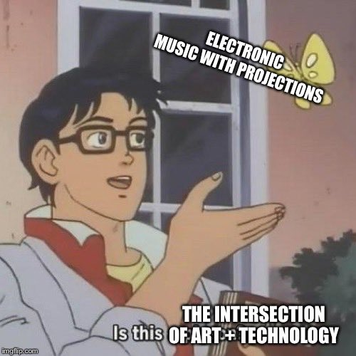

About this class
What?
What is at the intersection of art and technology? What does technology help us understand about art? How does art deepen our understanding of technology? Is all art technological?
These questions undergird art and technology practices and studies. In this course, we'll begin to approach these generative problems by beginning to develop our technical facility and expressivity with a creative coding tool.
Glancing at the ATS Studies course offerings, we will find that Art and Technology Studies is much more diverse and broad than digital art (generative art, interactive art, games, simulation, and machine learning): neon fabrication, light art, robotics, bioart and biodesign, olfactory art, holography... Why then are we focusing on a single skillset?
First let's talk about where our technical focus will be. We will work with a programming environment called p5*js. p5 is a version of Processing, a toolkit made for artists by artists. p5 is technically a library for the programming language JavaScript. One nice thing you will soon discover is that JavaScript is used in programming for the web, and so it will be very easy for us to share our creations with each other. This also means we will identify clear pathways from this work into netart, interactive art, generative art and more utilitarian skills like website building. Interactive installation, digital-physical computing, performance, games, experimental electronic literature, and simulations will not be far off either.
If the appeal of art and technology is that we are untethered from specific media, why focus on p5, which is ostensibly a language for produing images? In short, your journey has to start somewhere. In the past I have experimented with versions of this course where we dip our toes into
When?
This class will meet Wednesdays. As your instructor, I will work to make space in class for you to get started on your assignments. However (!), you'll need to create time in your weekly schedule to work on the readings and assignments for this class. Programming is a challenging skill and requires practice -- like playing an instrument or practicing a sport. What will your routine look like? Late Thursday nights, drum and bass in the headphones, tucked into a library corner? Or Sunday afternoon with a cup of coffee or tea, and lofi chill beats? Make time and space for these assignments and not only will you succeed in the class, your abilities will support your expressive ambitions in impressive ways.
Where?
This class will meet online through Zoom during our scheduled meeting time.
Office hours will also take place on Zoom.
Your final exhibition will be a web exhibition you can share with your friends.
How?
This site will outline each week and assign a reading and a code sketch. You will submit your code sketch on your course's learning management system. The text is Getting Started with p5*js by Lauren McCarthy, Ben Fry, and Casey Reas. I highly recommend purchasing a physical copy since much of this class will involve staring at a screen. Otherwise, you can find inexpensive (<$10) eBook versions online.
i’m doing a meme 
— Billy Gomberg (@billygomberg) November 7, 2019
curators are like “i know a spot” and then take you to the intersection of art and technology
— dan a (@decafdana) June 29, 2020
"What if we kissed at the intersection of art & technology?" 💋
March 16, 2021